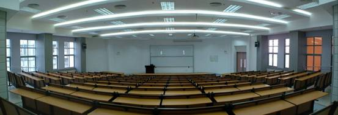
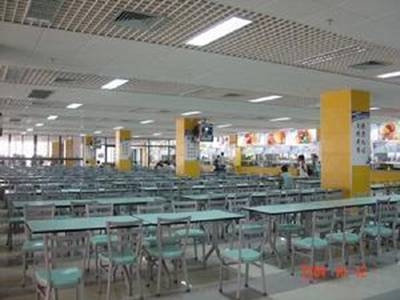
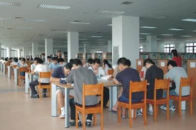
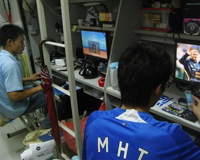

- 军训攻略
- 大学First Day
- 抵玩华师
- 学の华师
- 食の华师
- 住の华师
- 行の华师
- 华师の景
- Ucity简介
- Ucity2014年成就
说到学习，相信大家都很关心与学习有关的场所啦~那接下来我们就以排行榜的形式给大家展示一下华师里面究竟有什么学习场所吧~
学习场景一之课室：

没错，课室对于大部分学生来说应该是最合适的，毕竟我们在这个名为课室的场所寒窗苦读了12年，其环境加成效果堪比步步高牌点读机，整一个分为能够让焦躁的你放下心中的杂念，安心学习。
★优点：安静，氛围好，大家都在学习！
★缺点：坐在情侣附近让你心神不宁，期末木有位置。
❤课室自习推荐度：★★★★☆
学习场景二之饭堂：
你没看错就是饭堂…到了大学，饭堂也是一个相当多人选择的自习场所，一来饿了可以去找东西吃，二来空调wifi都是应有尽有的。如果你的饭堂没有空调，那说明你在石牌。
★优点：吃与学的完美结合，适合讨论。
★缺点：环境吵杂，容易分神，桌子也不够干净
❤饭堂自习推荐度：★★★☆☆

学习场景之三图书馆
图书馆又名屠猪馆，土猪馆等等，此图片放眼望去全是人，学渣U仔一眼就看出是期末的复习时间。而那么多人在期末选择这里，这里环境的好坏就呼之欲出了，自然是极好的才能成为大众的选择~这里有各种参考书，文艺书，如果能够每天来这里看看书的话，请联系U仔带我装逼带我飞~
★优点：参考书种类繁多，学习气氛良好，有空调有wifi
★缺点：空调不够给力，人多空气不好，太安静不敢讨论
❤推荐指数：★★★★☆

学习场景之四宿舍
关于宿舍…一切尽在不言中，看图片更能反映问题。
★优点：有电脑有空调有wifi，自由自在，坐姿随意
★缺点：玩物丧志
❤推荐指数：★☆☆☆☆
好的，最后U仔来总结一下，没有一个场景我打了满分，因为从来没有最佳的学习场所，只有最适合自己的学习地点，有的人即使去了图书馆也是玩手机睡觉，有的人即使是在宿舍也会认真的学习。因此，以上仅供参考，大家加油咯~

接下来是一些常见的问题哟~U仔手打！
Q： 师兄师姐们，为何会定“大学就是大概学学”这个话题？大学真的大概学学就好？
A：当然不是， 大学的很多学习都是靠自己的，成绩对以后也是有很大帮助的。 师范生绩点很重要~还可以评优，奖学金什么的。那样就要绩点够好。
Q：怎么拿奖学金？
A： 拿国奖的一般都能在绩点、社团、学生工作、公益上都能表现得很好，基本是全能的。 那还是要高绩点，学校还是很现实的，所以你们要加油啊..
Q：绩点怎么算？成绩怎么算？
A： 绩点就是期末成绩-50再除以10 最终成绩是期末成绩和平时成绩按照一定比例得出来的。
Q： 图书馆会不会很多人？？？？
A：复习周的时候很多人，平时基本上是有位置的哦~还有WiFi和空调~
Q：图书馆怎么借书？可以借几次？
A：拿了书然后去一楼的服务处办理就好啦~不过要有校卡，白卡哦。时间嘛是一个月一次啦~
Q：平时的课表哪里看？
A：一般学委会发的~或者可以用手机下载超级课程表或课程格子来看课表~
Q：哪位老师上课好？
A:告诉你也没用，大一上学期已经固定了的~
Q：据说大学可以逃课， 哪些课可以缺？
A： 尽量去上课，实在不喜欢而且听了也受益不大的课也尽量去上，你可以在无聊的课上解高数题或看课外书..
Q：大学一节课多少分钟？
A：40分钟
Q：关于上课再详细点
A： 上课不可以迟到，当然，迟到没有被辅导员抓到的话也没关系，上课可以玩手机和睡觉，但是期末考试复习的话代价就很大,有些课是几节课连着上的，但中间有休息时间，一般来说,第二节下课休息10分钟，课间可以问老师问题 ，主要也和同学们自己的学习态度，我个人建议有问题多去问一下老师，第一可以帮助你答疑解惑,第二就是老师会记住你，说不定平时分就会给得高一点
Q：平时需要买一些别的参考书吗~
A： 要哒，我们都有专门的教科书，当然,师弟也可以去买相关的书籍看~当然，对吾等广大学渣来说是不需要的。一般不需要辅导书，大学有一些课程连学校发的书还很少看。比如我学法，我除了看教科书外，我还根据师姐给我的建议，读了一些关于法律的书。恩，其次，可以根据兴趣，读一些跟专业无关的，比如英语杂志、小说等等
Q：大学有作业么？ 大学作业会很多麼？
A：基本上有，但是作业量看老师。每个学院的平时作业数量不同,有的学院每个星期都有作业,有的学院只有期中作业，这些作业是平时成绩的重要依据哈。
Q：平时到了期末了怎么复习？
A： 对于高数，大学物理，我的感悟是找前几年的试卷来做很重要，同时， 一些偏理科类的，例如高数、概论轮、西方经济学，还是要靠平时听懂的程度，资料的话，可以找师兄师姐去拿，这个到时候有一些认识的师兄师姐也会发给你们的，所以还不快点勾搭师兄师姐？ 学习委员也是会给的啦~
Q：假如期末考试不合格可以补考吗？
A：不合格就是挂科~ 在华师没有补考这种东西呢~ 如果挂科，只能重修 重修就是再学一次，甚至会推迟毕业。挂科会记入档案，而且最坑的是用红色标志，让人一看就很显目，所以千万不要挂科。
部分图片转自网络

Ucity简介
Ucity校园传媒是华南师范大学学生工作处指导下的实践、创新、培训基地。Ucity校园传媒致力于为广大学子提供各类校园资讯、计算机维修服务及大型校园活动策划实施等······